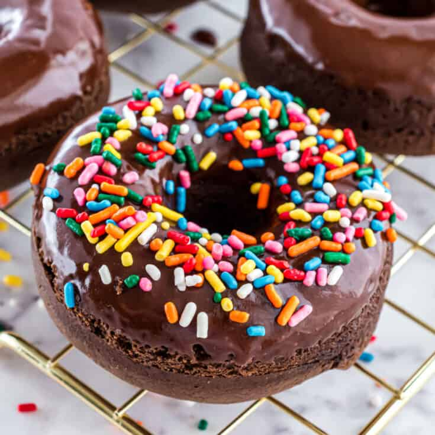

Donuts

Description
If you have made it this far, that means you have crafted a magnificent pizza, and a gigantic spaghetti. Now it is time for dessert.
Ingredients
- Dough
- Frosting of your choosing
- Sprinkles
Steps
- Roll your dough into a large blob.
- Rip off chunks of the dough that are the proper size for your donuts.
- Roll the donuts into a ball that is relatively flat.
- Poke a large donut sized hole into each donut and place them in the oven for 30 minutes.
- Once they are finished baking, place the frosting on top and cover with sprinkles.
- Enjoy.
Back